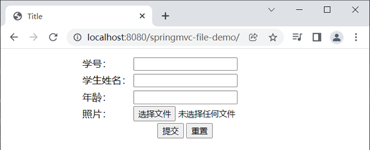
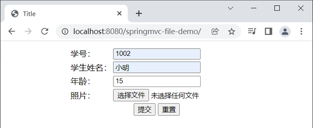
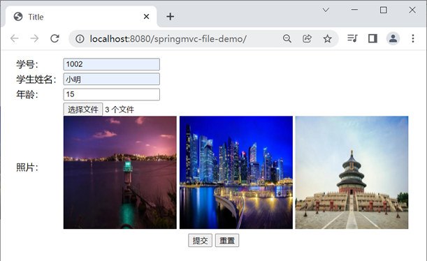
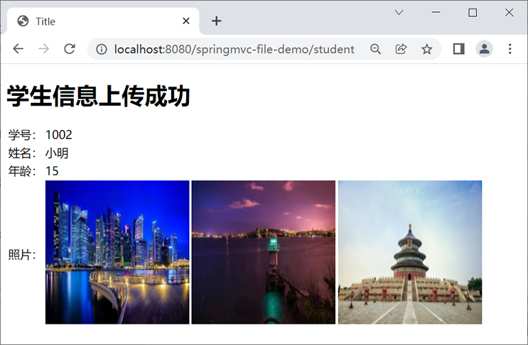

首页 > Spring MVC
Spring MVC文件上传
在实际的项目开发中，文件的上传和下载可以说是最常用的功能之一，例如图片的上传与下载、邮件附件的上传和下载等。本节我们将对 Spring MVC 中的文件上传功能进行讲解。
在 Spring MVC 中想要实现文件上传工作，需要的步骤如下。
form 表单想要具有文件上传功能，其必须满足以下 3 个条件。
常见的文件上传表单示例代码如下。
当 form 表单的 enctype 属性为 multipart/form-data 时，浏览器会以二进制流的方式对表单数据进行处理，由服务端对文件上传的请求进行解析和处理。
MultipartResolver 接口共有两个实现类，如下表。
以上这两个 MultipartResolver 的实现类，无论使用哪一个都可以实现 Spring MVC 的文件上传功能。这里，我们以 CommonsMultipartResolver 为例进行讲解。
想要在 Spring MVC 中使用 CommonsMultipartResolver 对象实现文件上传，我们需要在 Spring MVC 的配置文件中对其进行以下配置。
在以上配置中，除了定义了 CommonsMultipartResolver 的 Bean 外，还通过 <property> 标签对文件的编码格式和上传文件的大小进行了配置。
通过 <property> 可以对 CommonsMultipartResolver 的多个属性进行配置，其中常用的属性如下表。
在该控制器方法中包含一个 org.springframework.web.multipart.MultipartFile 接口类型的形参，该参数用来封装被上传文件的信息。MultipartFile 接口是 InputStreamSource 的子接口，该接口中提供了多个不同的方法，如下表。
1. 新建一个名为 springmvc-file-demo 的 Web 工程，并将 Spring MVC 以及 Apache Commons FileUpload 相关的依赖导入到该工程中，web.xml 配置如下。
2. 在 src 目录下新建一个 Spring MVC 的配置文件 springMVC.xml，配置内容如下。
3. 在 net.biancheng.c.entity 包下，创建一个名为 Student 的类，代码如下。
4. 在 webapp 下新建一个 js 目录，并将 jquery-3.6.0.min.js 添加进该目录下。
5. 在 webapp/WEB-INF 下新建一个 templates 目录，并在该目录下创建一个 file-upload.html ，代码如下。
6. 在 net.biancheng.c.controller 包下，创建一个名为 MultiFileController 的控制器类，代码如下。
5. 在 webapps/WEB-INF/tempaltes 目录下，新建一个 success.html，代码如下。
6. 将 springmvc-file-demo 部署到 Tomcat 服务器中并启动该服务器，使用浏览器访问“http://localhost:8080/springmvc-file-demo/”，结果如下图。
7. 在表单中分别填写学号、姓名、年龄等信息，然后点击“选择文件”按钮，如下图。
8. 选择需要上传的一张或多张图片，选择完成后，页面中回显了上传的图片，如下图。
9. 点击下方的提交按钮，将学生信息提交到后台，结果如下图。
在 Spring MVC 中想要实现文件上传工作，需要的步骤如下。
1. 编写 form 表单
在 Spring MVC 项目中，大多数的文件上传功能都是通过 form 表单提交到后台服务器的。form 表单想要具有文件上传功能，其必须满足以下 3 个条件。
- form 表单的 method 属性必须设置为 post。
- form 表单的 enctype 属性设置为 multipart/form-data。
- 至少提供一个 type 属性为 file 的 input 输入框。
常见的文件上传表单示例代码如下。
<form action="/upload" method="post" enctype="multipart/form-data">
<input type="file" name="fileName" multiple="multiple"/>
<input type="submit" value="上传">
</form>
当 form 表单的 enctype 属性为 multipart/form-data 时，浏览器会以二进制流的方式对表单数据进行处理，由服务端对文件上传的请求进行解析和处理。
在上面的代码中，除了满足文件上传表单所必须具备的 3 个条件外，<input> 标签中还增加了一个 multiple 属性。该属性可以让我们同时选择对个文件进行上传，即实现多文件上传功能。
2. 配置文件解析器（MultipartResolver ）
Spring MVC 提供了一个名为 MultipartResolver 的文件解析器，来实现文件上传功能。MultipartResolver 本身是一个接口，我们需要通过它的实现类来完成对它的实例化工作。MultipartResolver 接口共有两个实现类，如下表。
| 实现类 | 说明 | 依赖 | 支持的 Servlet 版本 |
|---|---|---|---|
| StandardServletMultipartResolver | 它是 Servlet 内置的上传功能。 | 不需要第三方 JAR 包的支持。 | 仅支持 Servlet 3.0 及以上版本 |
| CommonsMultipartResolver | 借助 Apache 的 commons-fileupload 来完成具体的上传操作。 | 需要 Apache 的 commons-fileupload 等 JAR 包的支持。 | 不仅支持 Servlet 3.0 及以上版本，还可以在比较旧的 Servlet 版本中使用。 |
以上这两个 MultipartResolver 的实现类，无论使用哪一个都可以实现 Spring MVC 的文件上传功能。这里，我们以 CommonsMultipartResolver 为例进行讲解。
想要在 Spring MVC 中使用 CommonsMultipartResolver 对象实现文件上传，我们需要在 Spring MVC 的配置文件中对其进行以下配置。
<!--配置文件上传解析器-->
<bean id="multipartResolver" class="org.springframework.web.multipart.commons.CommonsMultipartResolver">
<property name="defaultEncoding" value="UTF-8"></property>
<property name="maxUploadSize" value="1024000"></property>
</bean>
在以上配置中，除了定义了 CommonsMultipartResolver 的 Bean 外，还通过 <property> 标签对文件的编码格式和上传文件的大小进行了配置。
通过 <property> 可以对 CommonsMultipartResolver 的多个属性进行配置，其中常用的属性如下表。
| 属性 | 说明 |
|---|---|
| defaultEncoding | 上传文件的默认编码格式。 |
| maxUploadSize | 上传文件的最大长度（单位为字节）。 |
| maxInMemorySize | 读取文件到内存中的最大字节数。 |
| resolveLazily | 判断是否要延迟解析文件。 |
注意：当我们在 Spring MVC 的配置文件中对 CommonsMultipartResolver 的 Bean 进行定义时，必须指定这个 Bean 的 id 为 multipartResolver，否则就无法完成文件的解析和上传工作。
3. 引入 Jar 包
由于 CommonsMultipartResolver 是 Spring MVC 内部通过 Apache Commons FileUpload 技术实现的，因此我们还需要将 Apache Commons FileUpload 组件的相关依赖引入到项目中。注：点击上面的链接，即可下载相应的 JAR 包。
4. 编写控制器方法
在完成上面的所有步骤后，接下来，我们只需要在 Controller 中编写文件上传的方法即可实现文件的上传。
@Controller
public class FileUploadController {
@RequestMapping("/uplaod")
public String upload(MultipartFile file) {
if (!file.isEmpty()) {
return "success";
}
return "error";
}
}
在该控制器方法中包含一个 org.springframework.web.multipart.MultipartFile 接口类型的形参，该参数用来封装被上传文件的信息。MultipartFile 接口是 InputStreamSource 的子接口，该接口中提供了多个不同的方法，如下表。
| 名称 | 作用 |
|---|---|
| byte[] getBytes() | 以字节数组的形式返回文件的内容。 |
| String getContentType() | 返回文件的内容类型。 |
| InputStream getInputStream() | 返回一个 input 流，从中读取文件的内容。 |
| String getName() | 返回请求参数的名称。 |
| String getOriginalFillename() | 返回客户端提交的原始文件名称。 |
| long getSize() | 返回文件的大小，单位为字节。 |
| boolean isEmpty() | 判断被上传文件是否为空。 |
| void transferTo(File destination) | 将上传文件保存到目标目录下。 |
上传文件示例
下面，我们就通过一个实例，来演示下如何在 Spring MVC 中上传文件，具体步骤如下。1. 新建一个名为 springmvc-file-demo 的 Web 工程，并将 Spring MVC 以及 Apache Commons FileUpload 相关的依赖导入到该工程中，web.xml 配置如下。
<?xml version="1.0" encoding="UTF-8"?>
<web-app xmlns="http://xmlns.jcp.org/xml/ns/javaee"
xmlns:xsi="http://www.w3.org/2001/XMLSchema-instance"
xsi:schemaLocation="http://xmlns.jcp.org/xml/ns/javaee http://xmlns.jcp.org/xml/ns/javaee/web-app_4_0.xsd"
version="4.0">
<!--请求和响应的字符串过滤器-->
<filter>
<filter-name>CharacterEncodingFilter</filter-name>
<filter-class>org.springframework.web.filter.CharacterEncodingFilter</filter-class>
<init-param>
<param-name>encoding</param-name>
<param-value>UTF-8</param-value>
</init-param>
<init-param>
<param-name>forceResponseEncoding</param-name>
<param-value>true</param-value>
</init-param>
</filter>
<filter-mapping>
<filter-name>CharacterEncodingFilter</filter-name>
<url-pattern>/*</url-pattern>
</filter-mapping>
<!--来处理 PUT 和 DELETE 请求的过滤器-->
<filter>
<filter-name>HiddenHttpMethodFilter</filter-name>
<filter-class>org.springframework.web.filter.HiddenHttpMethodFilter</filter-class>
</filter>
<filter-mapping>
<filter-name>HiddenHttpMethodFilter</filter-name>
<url-pattern>/*</url-pattern>
</filter-mapping>
<!-- 配置SpringMVC的前端控制器，对浏览器发送的请求统一进行处理 -->
<servlet>
<servlet-name>dispatcherServlet</servlet-name>
<servlet-class>org.springframework.web.servlet.DispatcherServlet</servlet-class>
<init-param>
<param-name>contextConfigLocation</param-name>
<param-value>classpath:springMVC.xml</param-value>
</init-param>
<load-on-startup>1</load-on-startup>
</servlet>
<servlet-mapping>
<servlet-name>dispatcherServlet</servlet-name>
<url-pattern>/</url-pattern>
</servlet-mapping>
</web-app>
2. 在 src 目录下新建一个 Spring MVC 的配置文件 springMVC.xml，配置内容如下。
<?xml version="1.0" encoding="UTF-8"?>
<beans xmlns="http://www.springframework.org/schema/beans"
xmlns:xsi="http://www.w3.org/2001/XMLSchema-instance"
xmlns:context="http://www.springframework.org/schema/context"
xmlns:mvc="http://www.springframework.org/schema/mvc"
xsi:schemaLocation="http://www.springframework.org/schema/beans
http://www.springframework.org/schema/beans/spring-beans.xsd
http://www.springframework.org/schema/context
https://www.springframework.org/schema/context/spring-context.xsd http://www.springframework.org/schema/mvc https://www.springframework.org/schema/mvc/spring-mvc.xsd">
<!--开启组件扫描-->
<context:component-scan base-package="net.biancheng.c"></context:component-scan>
<!-- 配置 Thymeleaf 视图解析器 -->
<bean id="viewResolver"
class="org.thymeleaf.spring5.view.ThymeleafViewResolver">
<property name="order" value="1"/>
<property name="characterEncoding" value="UTF-8"/>
<property name="templateEngine">
<bean class="org.thymeleaf.spring5.SpringTemplateEngine">
<property name="templateResolver">
<bean class="org.thymeleaf.spring5.templateresolver.SpringResourceTemplateResolver">
<!-- 视图前缀 -->
<property name="prefix" value="/WEB-INF/templates/"/>
<!-- 视图后缀 -->
<property name="suffix" value=".html"/>
<property name="templateMode" value="HTML5"/>
<property name="characterEncoding" value="UTF-8"/>
</bean>
</property>
</bean>
</property>
</bean>
<!--当SpringMVC中设置任何一个view-controller时，其他控制器中的请求映射将全部失效，此时需要在SpringMVC的核心配置文件中设置开启mvc注解驱动的标签-->
<mvc:annotation-driven></mvc:annotation-driven>
<!--配置文件上传解析器-->
<bean id="multipartResolver" class="org.springframework.web.multipart.commons.CommonsMultipartResolver">
<!--设置上传文件的默认编码格式-->
<property name="defaultEncoding" value="UTF-8"></property>
<!--设置允许上传的最大长度-->
<property name="maxUploadSize" value="1024000"></property>
</bean>
<!--访问"/" 跳转到 file-upload.html 中-->
<mvc:view-controller path="/" view-name="file-upload"></mvc:view-controller>
<mvc:default-servlet-handler></mvc:default-servlet-handler>
</beans>
3. 在 net.biancheng.c.entity 包下，创建一个名为 Student 的类，代码如下。
package net.biancheng.c.entity;
import org.springframework.web.multipart.MultipartFile;
import java.util.List;
public class Student {
//学号
private String stuId;
//姓名
private String stuName;
//年龄
private Integer age;
//用于接收后台上传的文件
private List<MultipartFile> photos;
//文件名称的字符串
private String fileNameStr;
//已上传图片的路径集合
private List<String> path;
public List<String> getPath() {
return path;
}
public void setPath(List<String> path) {
this.path = path;
}
public void setPhotos(List<MultipartFile> photos) {
this.photos = photos;
}
public String getFileNameStr() {
return fileNameStr;
}
public void setFileNameStr(String fileNameStr) {
this.fileNameStr = fileNameStr;
}
public String getStuId() {
return stuId;
}
public void setStuId(String stuId) {
this.stuId = stuId;
}
public String getStuName() {
return stuName;
}
public void setStuName(String stuName) {
this.stuName = stuName;
}
public Integer getAge() {
return age;
}
public void setAge(Integer age) {
this.age = age;
}
public List<MultipartFile> getPhotos() {
return photos;
}
@Override
public String toString() {
return "Student{" +
"stuId='" + stuId + '\'' +
", stuName='" + stuName + '\'' +
", age=" + age +
", photos=" + photos +
", photoPath='" + fileNameStr + '\'' +
", path=" + path +
'}';
}
}
4. 在 webapp 下新建一个 js 目录，并将 jquery-3.6.0.min.js 添加进该目录下。
5. 在 webapp/WEB-INF 下新建一个 templates 目录，并在该目录下创建一个 file-upload.html ，代码如下。
<!DOCTYPE html>
<html lang="en" xmlns:th="http://www.thymeleaf.org">
<head>
<meta charset="UTF-8">
<title>Title</title>
<!--引入 jquery-->
<script type="text/javaScript"
src="../../js/jquery-3.6.0.min.js" th:src="@{/js/jquery-3.6.0.min.js}"></script>
</head>
<body>
<form th:action="@{/student}" method="post" enctype="multipart/form-data">
<table style="margin: auto">
<tr>
<td th:if="${not #strings.isEmpty(msg)}" colspan="2" align="center">
<p style="color: red;margin: auto" th:text="${msg}"></p>
</td>
</tr>
<tr>
<td>学号：</td>
<td><input type="text" name="stuId" required><br></td>
</tr>
<tr>
<td>学生姓名：</td>
<td><input type="text" name="stuName" required><br></td>
</tr>
<tr>
<td>年龄：</td>
<td><input type="number" name="age" required><br></td>
</tr>
<tr>
<td>照片：</td>
<td><input type="file" id="chooseImage" name="photos" multiple="multiple" required><br>
<span id="img-div"></span></td>
</tr>
<input id="fileNameStr" type="hidden" name="fileNameStr"/>
<tr>
<td colspan="2" align="center">
<input type="submit" value="提交">
<input type="reset" value="重置">
</td>
</tr>
</table>
<!-- 保存用户自定义的背景图片 -->
<img id="preview_photo" src="" width="200px" height="200px">
</form>
<script type="text/javascript" th:inline="javascript">
/*<![CDATA[*/
ctxPath = /*[[@{/}]]*/ '';
/*]]>*/
</script>
<script type="text/javaScript">
$('#chooseImage').on('change', function () {
var filePath = $(this).val(), //获取到input的value，里面是文件的路径
fileFormat = filePath.substring(filePath.lastIndexOf(".")).toLowerCase();
// 检查是否是图片
if (!fileFormat.match(/.png|.jpg|.jpeg/)) {
alert('上传错误,文件格式必须为：png/jpg/jpeg');
return;
}
//获取上传的文件
var arr = document.getElementById('chooseImage').files;
//遍历文件
for (var i = 0; i < arr.length; i++) {
//通过 FormData 将文件信息提交到后台
var formData = new FormData();
formData.append('photo', arr[i]);
$.ajax({
url: "http://localhost:8080/springmvc-file-demo/uploadPhoto",
type: "post",
data: formData,
contentType: false,
processData: false,
success: function (data) {
if (data.type == "success") {
//在图片显示区显示图片
var html = "<img id='" + data.filename + "' src='" + ctxPath + data.filepath + data.filename + "' width='200px' height='200px'> ";
$("#img-div").append(html);
//将文件路径赋值给 fileNameStr
var path = $("#fileNameStr").val();
if (path == "") {
$("#fileNameStr").val(data.filename);
} else {
$("#fileNameStr").val(path + "," + data.filename);
}
} else {
alert(data.msg);
}
},
error: function (data) {
alert("上传失败")
}
});
}
});
</script>
<style>
img[src=""], img:not([src]) {
opacity: 0;
}
</style>
</body>
</html>
6. 在 net.biancheng.c.controller 包下，创建一个名为 MultiFileController 的控制器类，代码如下。
package net.biancheng.c.controller;
import net.biancheng.c.entity.Student;
import org.apache.commons.io.FileUtils;
import org.springframework.http.HttpHeaders;
import org.springframework.http.HttpStatus;
import org.springframework.http.MediaType;
import org.springframework.http.ResponseEntity;
import org.springframework.stereotype.Controller;
import org.springframework.ui.Model;
import org.springframework.web.bind.annotation.RequestMapping;
import org.springframework.web.bind.annotation.RequestMethod;
import org.springframework.web.bind.annotation.ResponseBody;
import org.springframework.web.multipart.MultipartFile;
import javax.servlet.http.HttpServletRequest;
import java.io.File;
import java.io.IOException;
import java.util.*;
@Controller
public class MultiFileController {
/**
* 图片上传
*
* @param photo
* @param request
* @return
*/
@RequestMapping(value = "/uploadPhoto", method = RequestMethod.POST)
@ResponseBody
public Map<String, String> uploadPhoto(MultipartFile photo, HttpServletRequest request) {
Map<String, String> ret = new HashMap<String, String>();
if (photo == null) {
ret.put("type", "error");
ret.put("msg", "选择要上传的文件！");
return ret;
}
if (photo.getSize() > 1024 * 1024 * 10) {
ret.put("type", "error");
ret.put("msg", "文件大小不能超过10M！");
return ret;
}
//获取文件后缀
String suffix = photo.getOriginalFilename().substring(photo.getOriginalFilename().lastIndexOf(".") + 1, photo.getOriginalFilename().length());
if (!"jpg,jpeg,gif,png".toUpperCase().contains(suffix.toUpperCase())) {
ret.put("type", "error");
ret.put("msg", "请选择jpg、peg、gif、png 格式的图片！");
return ret;
}
String realPath = request.getServletContext().getRealPath("/upload/");
System.out.println(realPath);
File fileDir = new File(realPath);
if (!fileDir.exists()) {
fileDir.mkdir();
}
String filename = photo.getOriginalFilename();
System.err.println("正在上传的图片为：" + filename);
String newFileName = UUID.randomUUID() + filename;
try {
//将文件保存指定目录
photo.transferTo(new File(realPath + newFileName));
} catch (Exception e) {
ret.put("type", "error");
ret.put("msg", "保存文件异常！");
e.printStackTrace();
return ret;
}
ret.put("type", "success");
ret.put("msg", "上传图片成功！");
ret.put("filepath", "/upload/");
ret.put("filename", newFileName);
return ret;
}
/**
* 提交学生信息
*
* @param student
* @param model
* @return
*/
@RequestMapping(value = "/student", method = RequestMethod.POST)
public String uploadFile(Student student, Model model) {
String fileNameStr = student.getFileNameStr();
//将图片路径的字符串拆分，添加到图片路径的集合中
String[] split = fileNameStr.split(",");
List<String> list = new ArrayList<>();
for (String fileName : split) {
list.add(fileName);
}
student.setPath(list);
model.addAttribute("student", student);
return "success";
}
}
5. 在 webapps/WEB-INF/tempaltes 目录下，新建一个 success.html，代码如下。
<!DOCTYPE html>
<html lang="en" xmlns:th="http://www.thymeleaf.org">
<head>
<meta charset="UTF-8">
<title>Title</title>
</head>
<body>
<h1>学生信息上传成功</h1>
<table>
<tr>
<td>学号：</td>
<td th:text="${student.getStuId()}"></td>
</tr>
<tr>
<td>姓名：</td>
<td th:text="${student.getStuName()}"></td>
</tr>
<tr>
<td>年龄：</td>
<td th:text="${student.getAge()}"></td>
</tr>
<tr>
<td>照片：</td>
<td th:each="p:${student.getPath()}">
<img th:src="${#servletContext.getContextPath()}+'/upload/'+${p}" width='200px' height='200px'/><br>
</td>
</tr>
</table>
</body>
</html>
6. 将 springmvc-file-demo 部署到 Tomcat 服务器中并启动该服务器，使用浏览器访问“http://localhost:8080/springmvc-file-demo/”，结果如下图。

图1：Spring MVC 图片上传-1
7. 在表单中分别填写学号、姓名、年龄等信息，然后点击“选择文件”按钮，如下图。

图2：点击选择文件
8. 选择需要上传的一张或多张图片，选择完成后，页面中回显了上传的图片，如下图。

图3：图片回显
9. 点击下方的提交按钮，将学生信息提交到后台，结果如下图。

图4：学生信息提交成功
图4：学生信息提交成功
关注公众号「站长严长生」，在手机上阅读所有教程，随时随地都能学习。内含一款搜索神器，免费下载全网书籍和视频。

微信扫码关注公众号